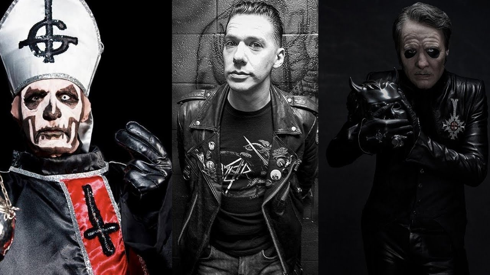

Tobias Forge (entonces conocido como Nameless Ghoul, quien realizaba entrevistas) mencionó que en 2006, un riff que más tarde se convertiría en " Stand By Him " dio origen a la banda y requirió letras satánicas sobre él [ 14 ] . También escribió "Death Knell" y "Prime Mover" poco después, lo que lo llevó a creer que la banda podría llegar a ser algo. Bautizándola como Ghost , intentó conseguir que otros vocalistas, como Messiah Marcolin, Mats Levén, Christer Göransson y JB Christoffersson, se unieran al proyecto, pero todos se negaron, por lo que él mismo se convirtió en el vocalista [ 15 ] . Debido a los resultados inconclusos, creó una demo donde él cantaba, la cual se convertiría en la base de Ghost.
Aunque la banda se formó en 2006, la identidad de Forge como líder de Ghost solo se confirmó en 2017, luego de una demanda de antiguos miembros de la banda debido a una disputa de regalías. Antes de alcanzar el éxito, estuvo en varias otras bandas, incluyendo Repugnant y Crashdïet , bajo el nombre artístico Mary Goore . Infancia Biografia Adultez